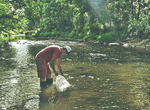
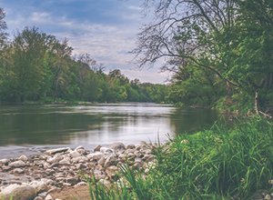
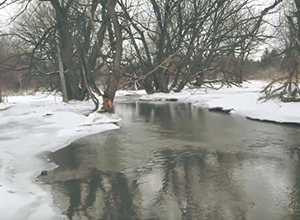

YEARLY MEMBERSHIP FOR ONLY $25
See details
FUNDRAISING FOR TRAA PROGRAMS
See details
"Hands-on Environmentalism" is what we do ...
This is what sets the TRAA apart from other clubs and organizations. You'll find us right in the water clearing obstructions from streams, measuring returning salmonids and taking scale samples for DNA analysis, education through trout hatchery tours and stream walks, being a voice for the Thames River watershed and its inhabitants and the list goes on.
PROJECTS
SALMONID MONITORING PROGRAM
Spring 2013 will be our fourth year of this 5-year project
Here's an overview of what happened over a few weekends in the Spring of 2012 when TRAA members and personnel from the Upper Thames River Conservation Authority (UTRCA) waded in for Year 3 of our 5-year Salmonid Tagging and Monitoring Program
…See more
TRAA TROUT HATCHERY
Rearing both brown and rainbow trout
The TRAA first began rearing rainbow trout in an outdoor upwelling incubation box back in 1986. Since then we've successfully taken on both brown trout and brook trout eggs
…See more
PAST EVENTS
BROWN TROUT RELEASE
Saturday, 4 May 2019
The brown trout were transferred from the TRAA hatchery and released at the same site on Medway Creek as in previous years.
TRAA members loaded up the trout fry into the transfer tank at the hatchery site. We then proceeded to the release site north of London, Ontario.
We were met there by two of the landowners through which this section of Medway Creek flows. They also brought out a large contingent of family and friends to lend a helping hand.
This video gives you a pretty good idea how it went.
It was a beautiful day, the stream was in perfect shape and everyone was smiling and laughing. Good times.
RIVER CLEANUP!
Sunday, 5 May 2019
The TRAA be helped out again this year with a cleanup of the shoreline and area of the river near the Komoka Road bridge.
After meeting at the NEW parking lot for Komoka Provincial Park on Gideon Drive, everyone carpooled to the usual stretch around the bridge.
Thank you to all that showed up to help out!
MEDWAY CREEK
HABITAT PROJECT
Initial Stream Walk, March 2019
Those of you who have been involved with the brown trout releases over the past few years may recognize this spot on Medway Creek as the release point.
Those of you who have been attending the last few General Meetings will also know that this is part of a 280-metre stretch on which we will be focusing future habitat rehabilitation efforts.
We have met with and have the support of the two landowners through which this stretch of Medway Creek flows.
Back in March we put together a short video of our stream walk on this section of Medway Creek, during which we documented areas in need of work and added our initial thoughts. Watch our video here.
If you would like to be involved with TRAA projects like this one or one of the many others that we have ongoing, please contact us.